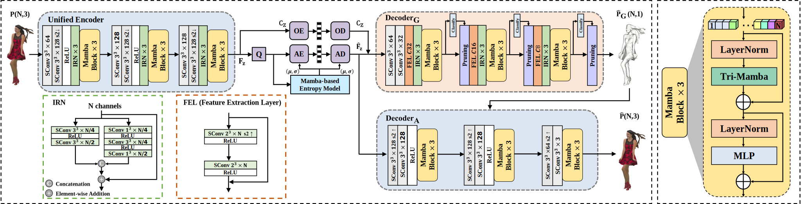
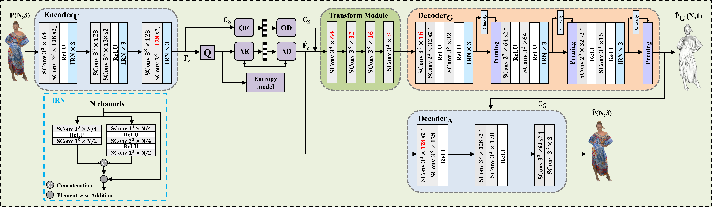

|
My name is Hsieh Kai-Hsiang. I completed my B.S. in Electrical Engineering and Computer Science
at Chung Yuan Christian University in 2023, under the guidance of Prof. Li-Der Jeng. During my
undergraduate studies, I undertook a research project titled “Application of YOLO for Drug
Identification System”, which was submitted to the Workshop on Consumer Electronics (WCE 2022).
In this project, I applied the YOLO object detection framework to develop a system capable of
accurately identifying drugs. This experience gave me hands-on skills in computer vision and deep
learning, and practical system implementation. It laid a solid foundation for my future research.
Top Skills: Machine Learning (ML), Computer Vision (CV), Image/Video/Point Cloud Processing, Point Cloud Compression. |
|
|
|
|  |
|
|  |
|
|
Template from Jon Barron |